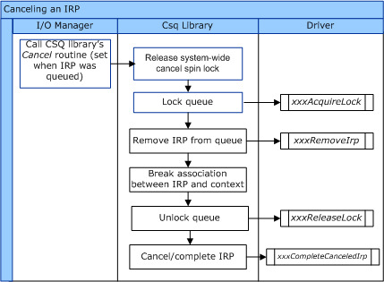
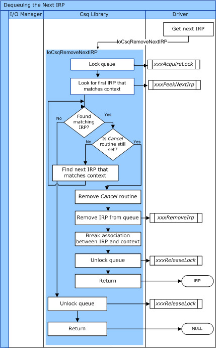
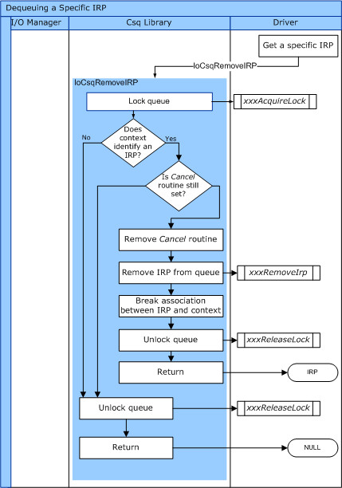
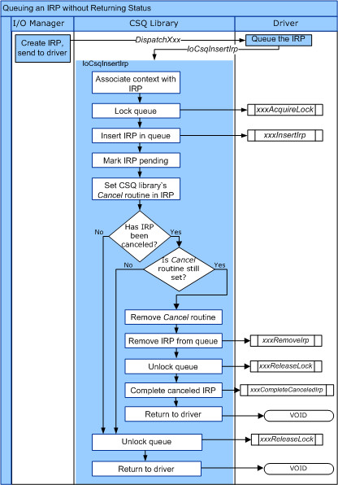
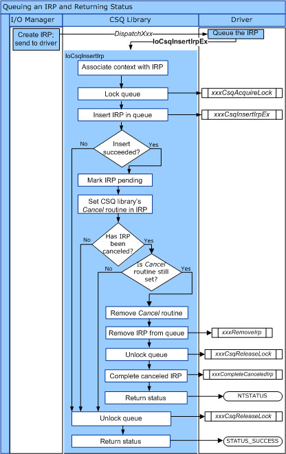

Steward
分享是一種喜悅、更是一種幸福
驅動程式 - Windows Driver Model (WDM) - 教學說明 - 9. Cancel Irp的操作步驟
參考資訊：
https://learn.microsoft.com/zh-tw/windows-hardware/drivers/kernel/cancel-safe-irp-queues
Cancel IRP本身就是一個很複雜的課題，因為有太多細節需要考慮，雖然複雜，不過簡單的邏輯判斷還是可以適用大多數的情境，那該如何簡單判斷呢？在處理該IRP時，如果該IRP沒有被Cancel，則處理並且完成該IRP，相反地，如果該IRP已經被Cancel，則Cancel Irp，是不是感覺司徒有說等於沒說，其實這是建議開發者不要自己實作複雜的Cancel IRP機制，因為Microsoft已經有提供一個很棒的框架給開發者使用，如果開發者還是想自己實作Cancel IRP時，簡單的做法如下：
1. CancelRoutine(NULL)
2. IoCompleteRequest(STATUS_CANCELLED)
Cancel-Safe IRP Queues(CSQ)是Microsoft提供的一個Cancel框架，這個框架概念就是讓使用者只專注在Cancel的資料處理上，而不是Cancel的同步處理上，畢竟每個人做出來的Cancel同步機制可能不同，但是原理應該是大同小異，因此，Microsoft提供了一個專門框架給驅動程式使用，Microsoft建議開發者使用這個框架來處理Cancel IRP，CSQ的處理流程如下：

需要設定的CSQ Callback：
1. CsqInsertIrp
2. CsqRemoveIrp
3. CsqPeekNextIrp
4. CsqAcquireLock
5. CsqReleaseLock
6. CsqCompleteCanceledIrp
IoCsqRemoveNextIrp的控制流程

IoCsqRemoveIrp的控制流程

IoCsqInsertIrp的控制流程

IoCsqInsertIrpEx的控制流程
